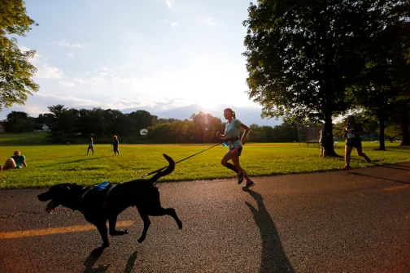
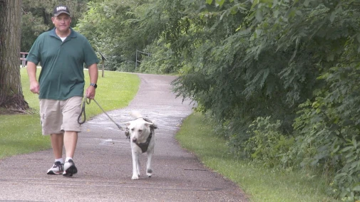
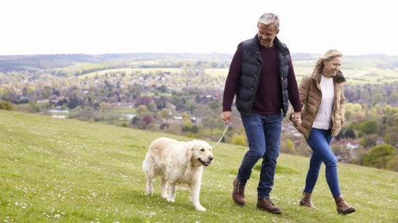

The Wagging Chronicle

MISSION
"To foster a vibrant community where individual dog lovers unite, share their passion, and enrich the lives of
canine
companions through connection, education, and advocacy."
Pawsitive Paws

Welcome, dog lovers, to the inaugural edition of The Wagging Chronicle! We're thrilled to
embark on this journey with you as we explore the wonderful world of dog walking and all the joys it brings to
both our furry friends and ourselves.
In this newsletter, we'll be delving into everything from the myriad benefits of daily dog walks to expert tips
for ensuring safe and enjoyable outings with your canine companions. Whether you're a seasoned dog owner or a new
pup parent looking to enhance your walking routine, The Wagging Chronicle is your go-to resource for all
things related to canine
exercise and exploration.

So, leash up your pups, lace up your walking shoes, and join us as we celebrate the simple pleasure of a
stroll
with our
four-legged pals. Let's make every walk an adventure to remember!
Featured Articles
Walking with our canine companions isn't just about getting from point A to point B—it's an essential activity
that
brings a multitude of benefits to both dogs and their human companions. In this article, we'll explore the
numerous
advantages of incorporating daily walks into your routine and why they're crucial for the health and happiness
of both
you and your furry friend.
Physical Health Benefits

Just like humans, our furry companions require regular exercise to maintain their overall health and
well-being. From
keeping a healthy weight to strengthening muscles and improving cardiovascular health, physical activity
plays a crucial
role in a dog's life. Daily walks offer the perfect opportunity for dogs to engage in the exercise they
need to thrive.
Mental Health Benefits

For our canine companions, walks offer much more than just physical exercise—they provide vital mental
stimulation that
is essential for their overall well-being. Dogs are naturally curious creatures, and exploring new
sights,
smells, and
sounds during walks offers valuable mental enrichment. This stimulation prevents boredom and reduces the
likelihood of
destructive behaviors at home, keeping our furry friends engaged and happy.
Socialization Benefits

Dogs, by their very nature, are social creatures, thriving on interactions with both their human
companions and fellow
canines. Taking your furry friend for walks not only benefits their physical health but also fulfills
their innate need
for social interaction.
Lapping Up
As we wrap up another edition of The Wagging Chronicle, we're filled with gratitude for the opportunity to
connect with
fellow dog lovers and share our passion for all things canine. From heartwarming stories and expert tips to
community
highlights and walking adventures, it's been a pleasure exploring the joys of dog walking together.
As we bid farewell to this edition, we're reminded of the simple yet profound pleasures that come from
spending
time
outdoors with our furry companions. Whether it's a leisurely stroll through the neighborhood or an
exhilarating
hike in
the great outdoors, every walk is an opportunity to strengthen the bond between us and our dogs, one step at
a
time.
We want to extend a heartfelt thank you to our readers, contributors, and partners for your ongoing support
and
enthusiasm. Your stories, insights, and feedback inspire us to continue sharing the magic of dog walking
with
the world.
As we look ahead to future editions of The Wagging Chronicle, we invite you to stay connected, share your
stories, and
join us on our journey to celebrate the incredible bond between humans and dogs. Together, let's make every
walk
an
adventure to remember!
Until next time, may your tails wag, your paws explore, and your hearts be filled with the love and
companionship of
your loyal canine companions.
Wishing you many wag-worthy adventures,
The Pawsitives
media@pawsitivespawsdemo.org